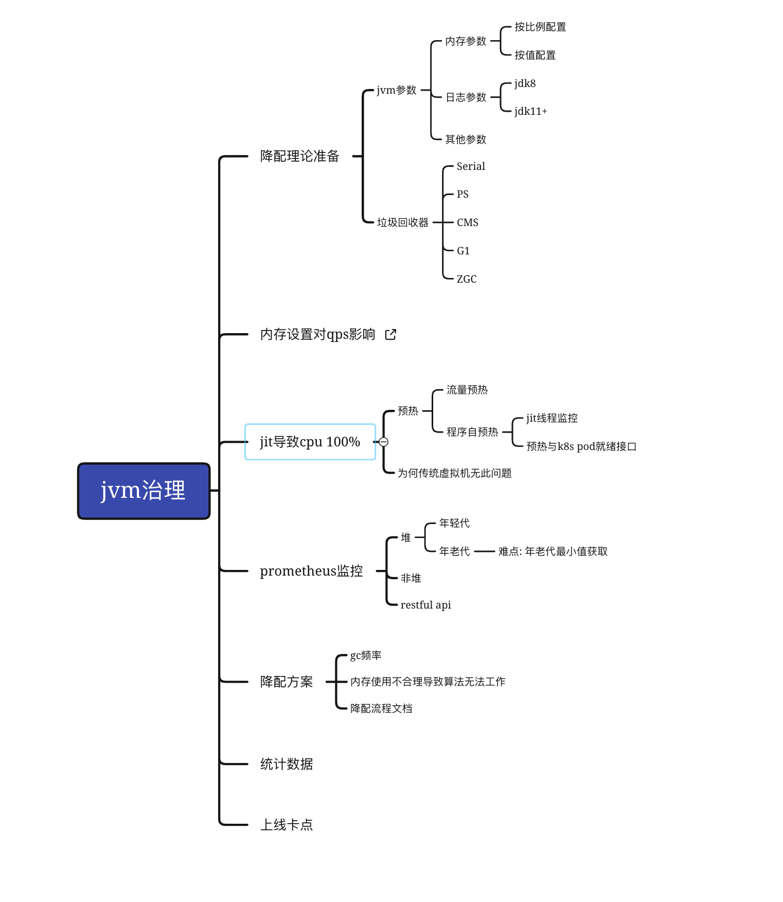
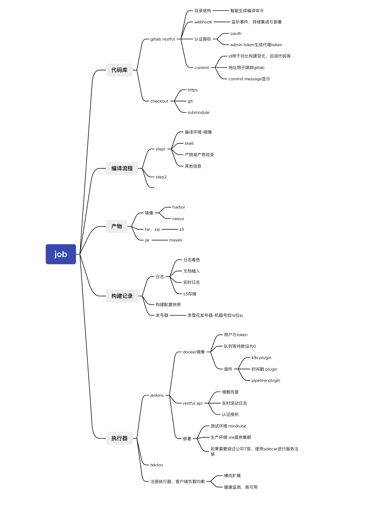

3. 个人介绍
本人自毕业后，一直致力于web领域的开发，至今有大约6年了。最初我只在java方面深有研究，但随着外界技术的不断演化，我也不断接触一些新的知识，如docker，kubernetes。在搜狐的几年，我开始真正做一些容器化和devops上的事情，希望在这个方向有所发展，后来则进入贝壳基础架构部。在这个部门，开始了真正的devops&容器化研发的道路。以下领域，是我足够擅长的，并能以一己之力完成领域内的任何目标的。
-
ci
贝壳的一款ci服务是我从零搭建的，可扩展性很高，目前贝壳存在4款ci产品，不只一次出现这种情况，当其他ci产品都无法满足需求的时候，会找到我的产品进行支持。
-
cd
贝壳的cd并不是我做的，但是我是主要维护人之一
-
服务治理
-
摘流
服务治理的事情较多，只说和cd相关的摘流，包括eureka，dubbo等服务的摘流，以及apisix(或其他)网关的摘流
-
-
api路由建设，包括但不限于
-
统一登录
-
api鉴权
-
cdn设计
-
基于域名的路由可视化
-
多k8s集群的路由同步器(非完整的流量跨集群方案)
-
-
基于api路由的前端devops设计
贝壳的前端devops是我精心设计的一款新的服务搭建与发版方案，并移除了多项繁琐的流程以及工单，用了都说好。
-
java方面的能力是很强的
-
有一定的前端开发能力
-
熟悉docker k8s等云原生相关技术栈
4. 工作经历
4.1. 贝壳找房 2021.7—今 容器化研发 & devops研发 & java 开源sdk维护
-
基于SpringBoot的Keboot框架开发与维护
-
jvm治理
该项目旨在解决私有云java应用资源存在大量的内存浪费现象。一方面是由于管理的松散，另一方面则是由于业务rd本身的素质不高，毕竟在jvm实战方面有能力的rd实际上并不多见，大多是理论知识雄厚，实际解决问题能力低下。大量应用浪费比率甚至超过了90%。浪费机器资源是显而易见的，然而更不能容忍的是人力的浪费。由于浪费比率很高，导致集群资源常常需要增加节点，部署节点的人力，审批需要的时间，预算不充足等等事项导致研发效率的低下。因此jvm治理提上日程。该项目通过采集常见jvm指标至prometheus，经prometheus聚合数据，进行查询分析，捕获了cms，g1垃圾回收器实际运行时的真实内存使用量，以此数据基础，推动业务rd修改jvm参数，甚至改造项目以达到有效的资源利用。
 -
应用构建系统设计与开发
该系统是对于传统jenkins系统的升级改造。原有构建系统，采用传统jenkins部署，新加任务节点由业务方自行添加jenkins node，由于各方都注册自己的节点，绝大多数时间节点处于idle状态，但该idle的节点，又不会给其他业务方共用，资源利用效率低下。不可共用的原因包括，编译环境，编译命令各团队不统一，甚至团队内部也无法统一。在容器化时代，这种问题采用容器化的思路迎刃而解，因此，构建系统的升级改造势在必行。同时，构建思路也应该有所调整，原来大多构建命令，生产与测试往往不一致，因此总会有rd跟qa抱怨，测试没问题啊！本次改造，要求测试与生产构建命令，产物完全一致，最终交付部署的产物为镜像，生产与测试的差异仅应当体现在配置文件(或配置中心)。
 -
前端应用devops流程设计
该系统打通了应用ci/cd,负载申请，cdn申请等多个流程，并新增了路由可视化，秒级回退，统一登录鉴权等多项功能。将前端的研发效率提高到了一个前所未有的新水平。